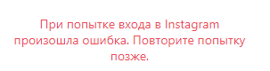

- Тип настройки: браузерное расширение “Обход блокировок Рунета”
- Тип проблемы: не работает Instagram
- Что с сайтом: перестала работать авторизация в Instagram, скриншот прилагается
 - Используемый браузер: Chrome
Нажмите F12, перейдите во вкладку Network (сеть) и посмотрите, какой ответ вам возвращает сервер при нажатии на кнопку. Вероятно, сам Instagram по какой-то причине отвергает дальнейшее взаимодействие с сайтом.
У меня тоже instagram не работает.
ping 192.168.104.1
Обмен пакетами с 192.168.104.1 по с 32 байтами данных:
Ответ от 192.168.104.1: число байт=32 время=119мс TTL=63
Ответ от 192.168.104.1: число байт=32 время=114мс TTL=63
Ответ от 192.168.104.1: число байт=32 время=108мс TTL=63
Ответ от 192.168.104.1: число байт=32 время=213мс TTL=63
Статистика Ping для 192.168.104.1:
Пакетов: отправлено = 4, получено = 4, потеряно = 0
(0% потерь)
Приблизительное время приема-передачи в мс:
Минимальное = 108мсек, Максимальное = 213 мсек, Среднее = 138 мсек
tracert instagram.com
Трассировка маршрута к instagram.com [10.224.37.255]
с максимальным числом прыжков 30:
1 <1 мс <1 мс <1 мс RT-N56U [192.168.1.1]
2 148 ms 321 ms 156 ms 10.224.37.255
3 142 ms 163 ms 161 ms 10.224.37.255
4 154 ms 109 ms 106 ms 10.224.37.255
5 171 ms 249 ms 215 ms 10.224.37.255
6 275 ms 238 ms 290 ms 10.224.37.255
7 314 ms 294 ms 271 ms 10.224.37.255
8 224 ms 176 ms 229 ms 10.224.37.255
9 266 ms 343 ms 265 ms 10.224.37.255
10 250 ms 246 ms 240 ms 10.224.37.255
11 * 269 ms 253 ms 10.224.37.255
12 273 ms 233 ms 292 ms 10.224.37.255
13 280 ms 171 ms 272 ms 10.224.37.255
14 * * * Превышен интервал ожидания для запроса.
15 174 ms 217 ms 243 ms 10.224.37.255
16 219 ms 575 ms 278 ms 10.224.37.255
17 265 ms 633 ms 250 ms 10.224.37.255
18 193 ms 231 ms 237 ms 10.224.37.255
Трассировка завершена.
Если вас смущают адреса в traceroute, то это нормально, так и должно быть.
Присоединяюсь — последние несколько дней именно инстаграм либо вообще не обновляется, либо очень медленно работает. С другими сайтами не замечал проблем.
Здравствуйте. Тоже не работает inst. Пишет следующее: “CSRF token missing or incorrect” когда пытаешься войти под своими данными. Браузер мозилла. Как-то можно решить проблему?
Вероятно, это проблема на стороне самого сайта. Инстаграм не любит прокси-сервера.
Вчера один раз заработал, а при повторной попытке зайти в аккаунт - снова пишет “CSRF token missing or incorrect” когда пытаешься войти под своими данными.
В группе anticensority сообщают, что проблема вызвана расширением Browsec.
https://groups.google.com/g/anticensority/c/g4MpMruLzD0
Вот спасибо, подсказали, Татьяна! Сломал голову. Оказывается в Browsec была проблема! У меня тоже, в браузере Опера установлены Обход блокировок Рунета и расширение Browsec и… Второй день, при авторизации в Instagram выдаёт: CSRF token missing or incorrect. Причём, при использовании одного Browsec - авторизуется нормально. Исправить бы, не помешало.
Проблема не в браузере и не в дополнениях, проверил лично на чистых инсталляциях Chrome, Opera, Firefox, Safari. Результат одинаковый.
При этом телефон авторизуется без проблем.
VPN настроен на кинетике, к которому подключен пк и телефон.
У меня не установлено расширение “Browsec”, я использую прописной впн от вас. Стоит расширение от касперского, но я пробовала его выключать на время и пробовать зайти в инст, но получала такое же сообщение: CSRF token missing or incorrect. Еще у меня стоит adblock, чтобы не было рекламы, тоже отключать пробовала, но в итоге все равно “CSRF token missing or incorrect”. Я уже пробовала на другом компьютере, на котором не стоят эти два расширения и результат один и тот же…
вот, кстати, у меня тоже кинетик… неужели все проблемы из-за него?
Уважаемые админы, подскажите, надежды на решение проблемы есть или нет?
Здравствуйте, проблема с АУДИО-сообщениями в инстаграм. Не проигрываются, ни входящие ни исходящие.
Такая проблема на мобильном интернете от МТС. На вайфае все работает.
Пользуюсь Iphone
Десктоп + подозрительныйадрес = шляпа
У меня такой вопрос. Раньше мне через браузер (десктопный Firefox) прилетали уведомления от Инстаграма, например, если кто-нибудь запускал стрим. Сейчас этого не происходит. Смотрел настройки браузера, там необходимые разрешения имеются. С Ютуба уведомления приходят. Это из-за того что Инстаграм заблокирован или нужно искать другую причину?
помогла смена useragent
не помогает смена useragent. Более того, под той же сетью если ходить с Mac под сафари или хромом тоже выдаёт эту ошибку “CSRF token missing or incorrect”.
Попробуйте повключать/поисключать адреса на вкладке “Исключения” (если вы используете наше расширение).
См. https://github.com/anticensority/runet-censorship-bypass/wiki/Чиним-сайты-со-сломанными-элементами.
У меня на кинетике развёрнуто через openvpn. В такой конфигурации есть какие-то варианты?
С расширением «Обход блокировок Рунета» в Chrome у меня Instagram по-прежнему выдаёт ошибку “CSRF token missing or incorrect”.  Приходится только из-за этого держать Firefox с расширением ZenMate.
Приходится только из-за этого держать Firefox с расширением ZenMate. 
С большой вероятностью ошибка вызвана блокировкой прокси-серверов на стороне сервиса, либо же блокируют конкретный браузер/клиента по каким-то характерным признакам.
Проблема, судя по всему, глобальная, в веб-интерфейсе Инстаграма.
Вот здесь есть сниппет, позволяющий обойти проблему.
One liner to run in JS console in your browser to fix CSRF token issue:
n=new Date;t=n.getTime();et=t+36E9;n.setTime(et);document.cookie='csrftoken='+document.body.innerHTML.split('csrf_token')[1].split('\\"')[2]+';path=\;domain=.instagram.com;expires='+n.toUTCString();Open JS console, copy paste it, press enter. Reload the page and try to login again. This js snippet will find CSRF token in page source and create cookie for you.
Прошу прощения, что пишу здесь.
У меня проблема с обходом блокировки instagram.
Когда я пропускаю *.cdninstagram.com через свой сервер shadowsocksR фотки из инстаграма не грузятся, а когда пропускаю *.cdninstagram.com через ProstoVPN.AntiZapret фотки грузятся, но очень не быстро. Хотелось бы, чтобы работало через shadowsocksR, но не знаю, где я ошибся.
Готов предоставить любую необходимую инфу.
Заранее спасибо.
UPD
Поставил обычный shadowsocks и всё заработало
A post was merged into an existing topic: Контейнер VPN АнтиЗапрета для установки на собственный сервер